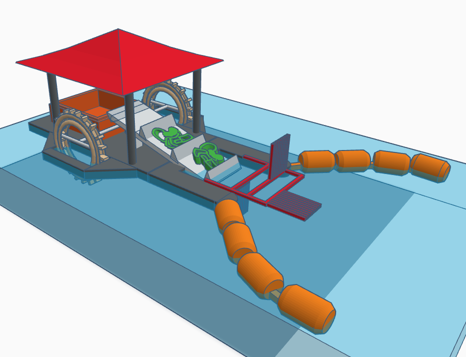

A Tecnologia por Trás do Mr. Sweep

O Mr. Sweep é uma solução inovadora no combate à poluição dos rios. Com tecnologia de ponta, esta máquina autônoma navega por cursos d'água coletando detritos, garantindo um ecossistema mais limpo e saudável.
Dados Atuais de Coleta
Aqui você encontra a quantidade de lixo coletado em tempo real pelo Mr. Sweep:

O Impacto da Poluição nos Rios
Entenda mais sobre como a poluição afeta nossos rios e o que o Mr. Sweep está fazendo para mudar isso.